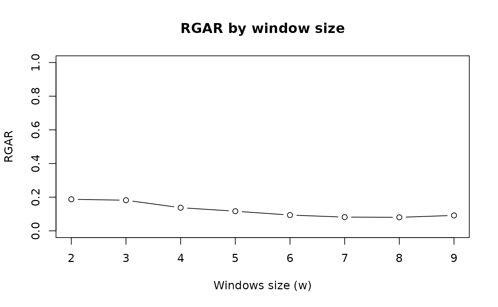

Criterion for a Loss/Merit Function for Data Given a Permutation
Source:R/criterion.R, R/criterion.array.R, R/criterion.dist.R, and 1 more
criterion.RdCompute the value for different loss functions \(L\) and merit function \(M\) for data given a permutation. A list with all methods and the available parameters is available here.
Usage
criterion(x, order = NULL, method = NULL, force_loss = FALSE, ...)
# S3 method for class 'array'
criterion(x, order = NULL, method = NULL, force_loss = FALSE, ...)
# S3 method for class 'dist'
criterion(x, order = NULL, method = NULL, force_loss = FALSE, ...)
# S3 method for class 'matrix'
criterion(x, order = NULL, method = NULL, force_loss = FALSE, ...)
# S3 method for class 'data.frame'
criterion(x, order = NULL, method = NULL, force_loss = FALSE, ...)
# S3 method for class 'table'
criterion(x, order = NULL, method = NULL, force_loss = FALSE, ...)Arguments
- x
an object of class dist or a matrix (currently no functions are implemented for array).
- order
an object of class ser_permutation suitable for
x. IfNULL, the identity permutation is used.- method
a character vector with the names of the criteria to be employed (see
list_criterion_methods()), orNULL(default) in which case all available criteria are used.- force_loss
logical; should merit function be converted into loss functions by multiplying with -1?
- ...
additional parameters passed on to the criterion method.
Details
Criteria for distance matrices (dist)
For a symmetric dissimilarity matrix \(D\) with elements \(d(i,j)\) where \(i, j = 1 \ldots n\), the aim is generally to place low distance values close to the diagonal. The following criteria to judge the quality of a certain permutation of the objects in a dissimilarity matrix are currently implemented (for a more detailed description and an experimental comparison see Hahsler (2017)):
Gradient measures:
"Gradient_raw","Gradient_weighted"(Hubert et al, 2001)A symmetric dissimilarity matrix where the values in all rows and columns only increase when moving away from the main diagonal is called a perfect anti-Robinson matrix (Robinson 1951). A suitable merit measure which quantifies the divergence of a matrix from the anti-Robinson form is $$ M(D) = \sum_{i=1}^n \sum_{i<k<j} f(d_{ij}, d_{ik}) + \sum_{i<k<j} f(d_{ij}, d_{kj})$$ where \(f(.,.)\) is a function which defines how a violation or satisfaction of a gradient condition for an object triple (\(O_i, O_k, O_j\)) is counted.
Hubert et al (2001) suggest two functions. The first function is given by: $$f(z,y) = sign(y-z) = +1 \ \text{if}\ z < y;\ 0\ \text{if}\ z = y; \ \text{and}\ -1 \ \text{if}\ z > y.$$
It results in raw number of triples satisfying the gradient constraints minus triples which violate the constraints.
The second function is defined as: $$f(z,y) = |y-z| sign(y-z) = y-z$$ It weights the each satisfaction or violation by the difference by its magnitude given by the absolute difference between the values.
Anti-Robinson events:
"AR_events","AR_deviations"(Chen, 2002)"AR_events"counts the number of violations of the anti-Robinson form. $$ L(D) = \sum_{i=1}^n \sum_{i<k<j} f(d_{ik}, d_{ij}) + \sum_{i<k<j} f(d_{kj}, d_{ij})$$with $$ f(z, y) = I(z, y) = 1 \ \text{if}\ z < y\ \text{and}\ 0 \ \text{otherwise,}$$
where \(I(.)\) is an indicator function returning 1 only for violations. Chen (2002) presented a formulation for an equivalent loss function and called the violations anti-Robinson events.
"AR_deviations": Chen (2002) also introduced a weighted versions of the loss function by using $$ f(z, y) = |y-z|I(z, y) $$ which weights each violation by the deviation.Relative generalized Anti-Robinson events:
"RGAR"(Tien et al, 2008)Counts Anti-Robinson events in a variable band (window specified by
wdefaults to the maximum of \(n-1\)) around the main diagonal and normalizes by the maximum of possible events.$$ L(D) = 1/m \sum_{i=1}^n \sum_{(i-w)\le j<k<i} I(d_{ij} < d_{ik}) + \sum_{i<j<k\le(i+w))} I(d_{ij} > d_{ik}) $$
where \(m=(2/3-n)w + nw^2 - 2/3 w^3\), the maximal number of possible anti-Robinson events in the window. The window size \(w\) represents the number of neighboring objects (number of entries from the diagonal of the distance matrix) are considered. The window size is \(2 \le w < n\), where smaller values result in focusing on the local structure while larger values look at the global structure.
...parameters are:wwindow size. Default is to use apctof 100% of \(n\).pctand alternative specification of w as a percentage of \(n\) in \((0, 100]\).relativelogical; can be set toFALSEto get the GAR, i.e., the absolute number of AR events in the window.
Banded anti-Robinson form criterion:
"BAR"(Earle and Hurley, 2015)Simplified measure for closeness to the anti-Robinson form in a band of size \(b\) with \(1 <= b < n\) around the diagonal.
$$ L(D) = \sum_{|i-j|<=b} (b+1-|i-j|) d_{ij} $$
For \(b = 1\) the measure reduces to the Hamiltonian path length. For \(b = n-1\) the measure is equivalent to ARc defined (see
register_DendSer())....parameter is:bband size defaults to a band of 20% of \(n\).Hamiltonian path length:
"Path_length"(Caraux and Pinloche, 2005)The order of the objects in a dissimilarity matrix corresponds to a path through a graph where each node represents an object and is visited exactly once, i.e., a Hamilton path. The length of the path is defined as the sum of the edge weights, i.e., dissimilarities.
$$L(D) = \sum_{i=1}^{n-1} d_{i,i+1}$$
The length of the Hamiltonian path is equal to the value of the minimal span loss function (as used by Chen 2002). Both notions are related to the traveling salesperson problem (TSP).
If
orderis not unique or there are non-finite distance valuesNAis returned.Lazy path length:
"Lazy_path_length"(Earl and Hurley, 2015)A weighted version of the Hamiltonian path criterion. This loss function postpones larger distances to later in the order (i.e., a lazy traveling sales person).
$$L(D) = \sum_{i=1}^{n-1} (n-i) d_{i,i+1}$$
Earl and Hurley (2015) proposed this criterion for reordering in visualizations to concentrate on closer objects first.
Inertia criterion:
"Inertia"(Caraux and Pinloche, 2005)Measures the moment of the inertia of dissimilarity values around the diagonal as
$$M(D) = \sum_{i=1}^n \sum_{j=1}^n d(i,j)|i-j|^2$$
\(|i-j|\) is used as a measure for the distance to the diagonal and \(d(i,j)\) gives the weight. This criterion gives higher weight to values farther away from the diagonal. It increases with quality.
Least squares criterion:
"Least_squares"(Caraux and Pinloche, 2005)The sum of squared differences between distances and the rank differences: $$L(D) = \sum_{i=1}^n \sum_{j=1}^n (d(i,j) - |i-j|)^2,$$ where \(d(i,j)\) is an element of the dissimilarity matrix \(D\) and \(|i-j|\) is the rank difference between the objects.
Note that if Euclidean distance is used to calculate \(D\) from a data matrix \(X\), the order of the elements in \(X\) by projecting them on the first principal component of \(X\) minimizes this criterion. The least squares criterion is related to unidimensional scaling.
Linear Seriation Criterion:
"LS"(Hubert and Schultz, 1976)Weights the distances with the absolute rank differences.
$$L(D) \sum_{i,j=1}^n d(i,j) |i-j|$$
2-Sum Criterion:
"2SUM"(Barnard, Pothen and Simon, 1993)The 2-Sum loss criterion multiplies the similarity between objects with the squared rank differences.
$$L(D) \sum_{i,j=1}^n 1/(1+d(i,j)) (i-j)^2,$$
where \(s(i,j) = 1/(1+d(i,j))\) represents the similarity between objects \(i\) and \(j\).
Absolute Spearman Correlation
"Rho"The absolute value of the Spearman rank correlation between the original distances and the rank differences in the order.
Matrix measures:
"ME","Moore_stress","Neumann_stress"These criteria are defined on general matrices (see below for definitions). The dissimilarity matrix is first converted into a similarity matrix using \(S = 1/(1+D)\). If a different transformation is required, then perform the transformation first and supply a matrix instead of a dist object.
Criteria for matrices (matrix)
For a general matrix \(X = x_{ij}\), \(i = 1 \ldots n\) and \(j = 1 \ldots m\), currently the following loss/merit functions are implemented:
Measure of Effectiveness:
"ME"(McCormick, 1972).The measure of effectiveness (ME) for matrix \(X\), is defined as
$$M(X) = 1/2 \sum_{i=1}^{n} \sum_{j=1}^{m} x_{i,j}(x_{i,j-1}+x_{i,j+1}+x_{i-1,j}+x_{i+1,j})$$
with, by convention
$$x_{0,j}=x_{m+1,j}=x_{i,0}=x_{i,n+1}=0.$$
ME is a merit measure, i.e. a higher ME indicates a better arrangement. Maximizing ME is the objective of the bond energy algorithm (BEA). ME is not defined for matrices with negative values.
NAis returned in this case.Weighted correlation coefficient:
"Cor_R"(Deutsch and Martin, 1971)Developed as the Measure of Effectiveness for the Moment Ordering Algorithm. R is a merit measure normalized so that its value always lies in \([-1,1]\). For the special case of a square matrix \(R=1\) corresponds to only the main diagonal being filled, \(R=0\) to a random distribution of value throughout the array, and \(R=-1\) to the opposite diagonal only being filled.
Matrix Stress:
"Moore_stress","Neumann_stress"(Niermann, 2005)Stress measures the conciseness of the presentation of a matrix/table and can be seen as a purity function which compares the values in a matrix/table with its neighbors. The stress measure used here is computed as the sum of squared distances of each matrix entry from its adjacent entries.
$$ L(X) = \sum_{i=1}^n \sum_{j=1}^m \sigma_{ij} $$
The following types of neighborhoods are available:
Moore: comprises the eight adjacent entries. $$ \sigma_{ij} = \sum_{k=\max(1,i-1)}^{\min(n,i+1)} \sum_{l=\max(1,j-1)}^{\min(m,j+1)} (x_{ij} - x_{kl})^2 $$
Neumann: comprises the four adjacent entries. $$ \sigma_{ij} = \sum_{k=\max(1,i-1)}^{\min(n,i+1)} (x_{ij} - x_{kj})^2 + \sum_{l=\max(1,j-1)}^{\min(m,j+1)} (x_{ij} - x_{il})^2 $$
The major difference between the Moore and the Neumann neighborhood is that for the later the contribution of row and column permutations to stress are independent and thus can be optimized independently.
References
Barnard, S.T., A. Pothen, and H. D. Simon (1993): A Spectral Algorithm for Envelope Reduction of Sparse Matrices. In Proceedings of the 1993 ACM/IEEE Conference on Supercomputing, 493–502. Supercomputing '93. New York, NY, USA: ACM.
Caraux, G. and S. Pinloche (2005): Permutmatrix: A Graphical Environment to Arrange Gene Expression Profiles in Optimal Linear Order, Bioinformatics, 21(7), 1280–1281.
Chen, C.-H. (2002): Generalized association plots: Information visualization via iteratively generated correlation matrices, Statistica Sinica, 12(1), 7–29.
Deutsch, S.B. and J.J. Martin (1971): An ordering algorithm for analysis of data arrays. Operational Research, 19(6), 1350–1362. doi:10.1287/opre.19.6.1350
Earle, D. and C.B. Hurley (2015): Advances in Dendrogram Seriation for Application to Visualization. Journal of Computational and Graphical Statistics, 24(1), 1–25. doi:10.1080/10618600.2013.874295
Hahsler, M. (2017): An experimental comparison of seriation methods for one-mode two-way data. European Journal of Operational Research, 257, 133–143. doi:10.1016/j.ejor.2016.08.066
Hubert, L. and J. Schultz (1976): Quadratic Assignment as a General Data Analysis Strategy. British Journal of Mathematical and Statistical Psychology, 29(2). Blackwell Publishing Ltd. 190–241. doi:10.1111/j.2044-8317.1976.tb00714.x
Hubert, L., P. Arabie, and J. Meulman (2001): Combinatorial Data Analysis: Optimization by Dynamic Programming. Society for Industrial Mathematics. doi:10.1137/1.9780898718553
Niermann, S. (2005): Optimizing the Ordering of Tables With Evolutionary Computation, The American Statistician, 59(1), 41–46. doi:10.1198/000313005X22770
McCormick, W.T., P.J. Schweitzer and T.W. White (1972): Problem decomposition and data reorganization by a clustering technique, Operations Research, 20(5), 993-1009. doi:10.1287/opre.20.5.993
Robinson, W.S. (1951): A method for chronologically ordering archaeological deposits, American Antiquity, 16, 293–301. doi:10.2307/276978
Tien, Y-J., Yun-Shien Lee, Han-Ming Wu and Chun-Houh Chen (2008): Methods for simultaneously identifying coherent local clusters with smooth global patterns in gene expression profiles, BMC Bioinformatics, 9(155), 1–16. doi:10.1186/1471-2105-9-155
See also
Other criterion:
registry_for_criterion_methods
Examples
## create random data and calculate distances
m <- matrix(runif(20),ncol=2)
d <- dist(m)
## get an order for rows (optimal for the least squares criterion)
o <- seriate(d, method = "MDS")
o
#> object of class ‘ser_permutation’, ‘list’
#> contains permutation vectors for 1-mode data
#>
#> vector length seriation method
#> 1 10 MDS
## compare the values for all available criteria
rbind(
unordered = criterion(d),
ordered = criterion(d, o)
)
#> 2SUM AR_deviations AR_events BAR Gradient_raw
#> unordered 1132.228 25.248456 109 11.518294 22
#> ordered 1010.628 2.533581 22 7.107991 196
#> Gradient_weighted Inertia LS Lazy_path_length Least_squares
#> unordered 6.883682 821.8416 157.8410 19.795951 1358.307
#> ordered 55.140573 1080.5100 190.0122 8.795002 1293.965
#> MDS_stress ME Moore_stress Neumann_stress Path_length
#> unordered 0.6428636 97.18996 22.694707 11.697180 3.717250
#> ordered 0.2631493 99.49022 9.243974 4.726517 2.181144
#> RGAR Rho
#> unordered 0.45416667 0.04355907
#> ordered 0.09166667 0.82049576
## compare RGAR by window size (from local to global)
w <- 2:(nrow(m)-1)
RGAR <- sapply(w, FUN = function (w)
criterion(d, o, method="RGAR", w = w))
plot(w, RGAR, type = "b", ylim = c(0,1),
xlab = "Windows size (w)", main = "RGAR by window size")
